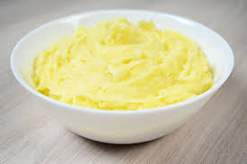

Puree de pommes de terre

Description
Plat passe partout
A manger chaud
Ingrédients
- pommes de terre
- huile
- assaisonnements
- lait
Etapes
- Retirer et bien égoutter les morceaux de patate
- Ajouter un liquide (eau de cuisson, lait ou crème à cuisson)
- Ajouter un corps gras (beurre)
- Piler avec le presse-purée
Home